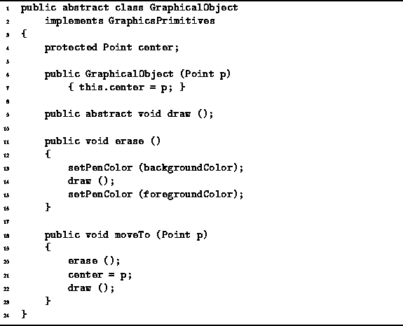

Data Structures and Algorithms
with Object-Oriented Design Patterns in Java
Data Structures and Algorithms
with Object-Oriented Design Patterns in Java
Consider the GraphicalObject class
defined in Program  .
The GraphicalObject class implements
the GraphicsPrimitives interface.
.
The GraphicalObject class implements
the GraphicsPrimitives interface.

Program: GraphicalObject class.
The GraphicalObject class has a single field, center, which is a Point that represents the position in a drawing of the center-point of the graphical object. The constructor for the GraphicalObject class takes as its argument a Point and initializes the center field accordingly.
Program shows a possible implementation
for the erase method:
In this case we assume that the image is drawn using an imaginary pen.
Assuming that we know how to draw a graphical object,
we can erase the object by changing the color of the pen
so that it matches the background color
and then redrawing the object.
Once we can erase an object as well as draw it,
then moving it is easy.
Just erase the object,
change its center point,
and then draw it again.
This is how the moveTo method shown in
Program is implemented.
We have seen that the GraphicalObject class provides implementations for the erase and moveTo methods. However, the GraphicalObject class does not provide an implementation for the draw method. Instead, the method is declared to be abstract. We do this because until we know what kind of object it is, we cannot possibly know how to draw it!
Consider the Circle class defined in Program .
The Circle class extends
the GraphicalObject class.
Therefore, it inherits the field center
and the methods erase and moveTo.
The Circle class adds an additional field,
radius,
and it overrides the draw method.
The body of the draw method is not shown in Program .
However, we shall assume that it draws a circle with the given radius
and center point.
Using the Circle class defined in Program
we can write code like this:
Circle c = new Circle (new Point (0, 0), 5); c.draw (); c.moveTo (new Point (10, 10)); c.erase ();This code sequence declares a circle object with its center initially at position (0,0) and radius 5. The circle is then drawn, moved to (10,10), and then erased.
Program defines the Rectangle class
and Program defines the Square class.
The Rectangle class also extends the GraphicalObject class.
Therefore, it inherits the field center
and the methods erase and moveTo.
The Rectangle class adds two additional fields,
height and width,
and it overrides the draw method.
The body of the draw method is not shown in Program .
However, we shall assume that it draws a rectangle with the given dimensions
and center point.
The Square class extends the Rectangle class. No new fields or methods are declared--those inherited from GraphicalObject or from Rectangle are sufficient. The constructor simply arranges to make sure that the height and width of a square are equal!
 Copyright © 1998 by Bruno R. Preiss, P.Eng. All rights reserved.
Copyright © 1998 by Bruno R. Preiss, P.Eng. All rights reserved.